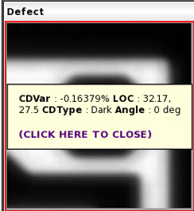

The measurement location
can be viewed on the defect and reference images using the Display Measurement
feature.
Procedure
- In
the IMU tool bar, click the Display
Measurement button.
Figure 1. Display Measurement
- To view CD measurement values such as CDVar,
LOC, and CDType, run Calibre DefectClassify (see the Calibre DefectClassify User’s Manual for details).
- In an IMU, double-click the Display Measurement
cross bar on
the image. Values are displayed in a tooltip as shown in the following
figure.
Figure 2. CD Measurement Values
- To close the tooltip, click the tooltop box.